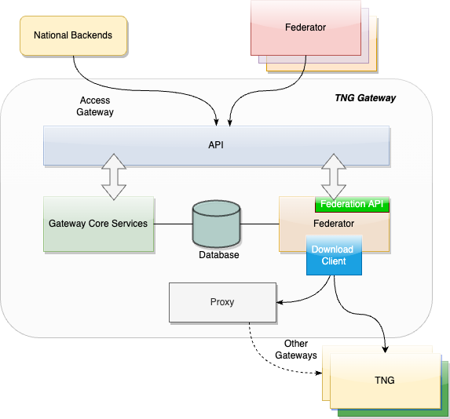

Traducción automática — no revisada por una persona
Esta página se tradujo automáticamente. Ninguna persona ha revisado ni validado esta traducción, que puede contener errores. Solo la página en el idioma original es la de referencia. Leer el original (inglés)
Machine translation — not reviewed by a person
This page was translated automatically. No person has reviewed or adjudicated this translation, and it may contain errors. The source-language page is the authoritative text. Read the original (English)
Terminología
Estos conceptos y la tabla siguiente recogen las abreviaturas y la terminología utilizadas en este documento.
| Término | Descripción |
|---|---|
| DCC | Certificado COVID-19 digital (Digital COVID-19 Certificate). |
| DDCC | Documentación digital de certificados de COVID-19 (Digital Documentation COVID-19 Certificate). |
| DCC Gateway | Aplicación web REST para el intercambio de certificados de firmantes de documentos, conjuntos de valores del DCC, reglas de negocio del DCC y listas de revocación, con fines de verificación del DCC, entre los backends nacionales de los Estados conectados. |
| CMS | Cryptographic Message Syntax (sintaxis de mensajes criptográficos). Según RFC5652. Esta sintaxis se utiliza para firmar digitalmente, resumir, autenticar o cifrar contenido de mensajes arbitrario. |
| JRC | Centro Común de Investigación europeo (European Joint Research Centre). |
| OG | Puerta de enlace de origen (Origin Gateway). |
| CQL | Clinical Quality Language (lenguaje de calidad clínica). |
Introducción
Esta especificación de arquitectura proporciona los medios para establecer una red de confianza federada para su uso con registros de salud, como las especificaciones técnicas y los documentos de orientación para la implementación de la Documentación digital de certificados de COVID-19 (DDCC) de la OMS. Se basa en el supuesto de que los participantes en la red de confianza pueden establecer sus propias redes de confianza nacionales independientes, participar en una red de confianza regional o desear participar en una red de confianza federada mundial. Además, los participantes en la red de confianza pueden desear que estas redes de confianza sean interoperables para casos de uso nacionales e interjurisdiccionales. Si bien las consideraciones específicas de gobernanza y de políticas necesarias para establecer estas redes de confianza interoperables quedan fuera del ámbito de este documento, la intención es que el diseño técnico de este documento respalde las políticas intrajurisdiccionales e interjurisdiccionales de los participantes en la red de confianza.
Las especificaciones de la puerta de enlace a la red de confianza (TNG) de este documento están diseñadas para respaldar la especificación DDCC, que actúa como especificación puente/marco para diversos registros de salud, como los certificados COVID digitales (p. ej., el DCC de la UE, SMART Health Cards, DIVOC e ICAO). Esta especificación se basa en la EU Digital Covid Certificate Gateway y la amplía en varios aspectos importantes:
- permitiendo la federación y el intercambio entre pares de información entre puertas de enlace;
- facilitando el acceso a contenido de metadatos (p. ej., conjuntos de valores/codificaciones, reglas de negocio) con adhesión explícita a la especificación HL7 FHIR;
- proporcionando un medio explícito para la revocación de certificados COVID digitales; y
- permitiendo la compatibilidad (opcional) con flujos de trabajo de verificación y validación en línea.
En el sistema DCC actual, la puerta de enlace centralizada desempeña la función clave de establecer la confianza entre todos los participantes en la red de confianza conectados. Los operadores de la puerta de enlace siguen un proceso bien documentado para establecer la identidad e incorporar el ancla de confianza de cada participante en la red de confianza. La TNG se basa en este sistema para permitir que otras organizaciones creen puertas de enlace de confianza, lo que permite formar una red federada de puertas de enlace de confianza compatible con todos los principales certificados de credenciales de COVID-19.
Parte de confianza frente a backend nacional
El diseño actual de la puerta de enlace se centra en el establecimiento de la confianza entre “backends nacionales”, entendidos como sistemas operados por una autoridad sanitaria nacional o de su propiedad. Puede tratarse de un script, de una solución totalmente automatizada o de un proceso manual capaz de conectarse a la puerta de enlace de forma fiable y de realizar cargas y descargas del contenido. Qué otras soluciones concretas haya detrás queda fuera del ámbito de la propia puerta de enlace. En el ámbito de la DDCC, el término “backend nacional” resulta demasiado restrictivo, porque puede haber otras partes que se conecten con su sistema de publicación a una puerta de enlace de la red de confianza. Por lo tanto, en este ámbito el término “backend nacional” debería entenderse más bien como “parte de confianza” (Trusted Party), es decir, un participante que ha recibido acceso a una puerta de enlace de confianza. La puerta de enlace de confianza o el federador actúa entonces, a su vez, como “parte de confianza” ante otras puertas de enlace.
Visión del diseño de la puerta de enlace
Actualmente, la EU DCC Gateway es un único sistema centralizado que establece la confianza entre los participantes en el DCC y permite compartir reglas de negocio, conjuntos de valores y listas de revocación. Si otra región del mundo establece una puerta de enlace de este tipo, la arquitectura no ofrece actualmente ningún método para intercambiar estos datos de confianza entre las dos puertas de enlace. En esta nueva arquitectura, en el contexto de la DDCC, varias puertas de enlace pueden conectarse entre sí y compartir datos de confianza. A largo plazo, esta arquitectura permitirá crear grupos y, en última instancia, establecer una federación. Esta arquitectura puede ser aplicable y de interés para partes que no son autoridades, p. ej., aerolíneas que desean una copia de solo lectura del contenido de la puerta de enlace. Esto puede lograrse incorporando la aerolínea a una puerta de enlace configurada especialmente para este fin y conectada a la puerta de enlace oficial. Para alcanzar este objetivo, la arquitectura debe admitir varios modos de funcionamiento, p. ej., primario-secundario. La implementación actual de la EU DCCG es, como se ha mencionado, un único sistema centralizado que sirve de nodo central para almacenar y gestionar la información necesaria recopilada de las partes de confianza (Trusted Parties).

La TNG debería llevar a cabo esta mejora de la implementación actual de la DCCG con el propósito de crear una red entre varias puertas de enlace para intercambiar material de claves públicas asociado a registros de salud, conjuntos de valores y reglas de negocio entre distintas partes (autoridades, no autoridades, entidades comerciales). En esta arquitectura, una puerta de enlace puede conectarse a cualquier otra configurando manualmente la lista de conexiones y relaciones de confianza. Para gestionar las conexiones y su comportamiento de descarga se introduce un nuevo componente, el federador. El federador es un microservicio que actúa como cliente de descarga automatizado entre dos puertas de enlace y cumple todas las responsabilidades del intercambio de datos de confianza.

La base de este intercambio de datos es la funcionalidad de la actual biblioteca conectora, que se conecta a la puerta de enlace y proporciona al consumidor las funcionalidades más necesarias. Esta biblioteca se amplía con la funcionalidad de conectarse a varias puertas de enlace en lugar de a una sola.
Casos de uso
Incorporación bilateral
En el caso de uso de incorporación bilateral, la biblioteca conectora se conecta como parte de confianza a varias puertas de enlace para descargar/cargar contenido. Esto requiere la incorporación en ambas puertas de enlace.

Intercambio entre pares
En el caso de uso de intercambio entre pares (peer-to-peer), dos o más puertas de enlace pueden intercambiar sus datos de forma bidireccional. La puerta de enlace de origen y la de destino se permiten mutuamente descargar los datos. Todos los datos intercambiados se añadirán a los datos existentes en la puerta de enlace. Esto puede incluir los datos de puertas de enlace de terceros, si lo permite el acuerdo de intercambio de datos entre las dos puertas de enlace.

Intercambio primario-secundario
En el caso de uso de intercambio primario-secundario, una o varias puertas de enlace actúan como fuente primaria y otro conjunto de puertas de enlace actúa como fuente secundaria. En este modo, las secundarias descargarán los datos de la primaria y los añadirán a su propio conjunto de datos o reemplazarán su conjunto de datos por los datos descargados. La primaria ignora los datos de las secundarias, que actúan únicamente como copias de lectura de la puerta de enlace primaria. Los backends nacionales principales pueden conectarse a la puerta de enlace primaria y cargar los datos en esa única puerta de enlace primaria.

Intercambio de fuentes combinadas
En el caso de uso de intercambio de fuentes combinadas, la puerta de enlace descargará datos de varias puertas de enlace y los añadirá a su propio conjunto de datos. El resultado es una colección combinada.

Mediador de confianza
El contenido de la puerta de enlace puede utilizarse para establecer la confianza entre participantes que solo están débilmente acoplados, por ejemplo, dispositivos verificadores conocidos por la parte de confianza A, pero no conocidos directamente por la parte de confianza B.

Para establecer la confianza entre los participantes, puede generarse un mediador de confianza que se base en la lista de confianza de la puerta de enlace. El mediador puede entonces utilizar esta información para decidir si debería establecerse o no la relación de confianza. Por ejemplo, el interceptor puede comprobar si la firma de un JWT se creó con la clave pública de un certificado firmado por una SCA incorporada. Si la SCA está incorporada y es de confianza, queda demostrado que la firma la realizó alguien que cuenta con la confianza de esa SCA. Con ello, también se otorga la confianza a este participante.

Visión general de la arquitectura
El propósito de la puerta de enlace a la red de confianza es permitir el intercambio seguro y de confianza de datos dentro de una red de confianza.
Datos intercambiados por la TNG
Intercambio de metadatos
La TNG proporciona un medio interoperable para intercambiar metadatos de claves en apoyo de los certificados digitales de COVID-19 mediante las normas HL7 FHIR. Esto incluye, en particular:
- Conjuntos de valores que deberían compartirse mediante las transacciones definidas en el perfil IHE Sharing Value Sets and Concept Maps (SVCM) e incluir los siguientes recursos:
- Recursos ValueSet de HL7 FHIR para compartir las codificaciones y terminologías a las que hacen referencia las diversas especificaciones de certificados COVID digitales (p. ej., vacunas o pruebas permitidas). - Pueden utilizarse recursos ConceptMap de HL7 FHIR para proporcionar correspondencias entre la codificación definida por cada jurisdicción y la codificación de la especificación DDCC.
- Reglas de negocio que deberían seguir la Knowledge Artifact y la infraestructura de apoyo a la decisión clínica (Clinical Decision Support), incluidos los siguientes recursos:
- Recursos Library de HL7 FHIR para compartir bibliotecas de reglas de negocio expresadas mediante Clinical Quality Language (CQL)
- Recursos PlanDefinition de HL7 FHIR para indicar qué regla de negocio debería ejecutarse según los casos de uso pertinentes de validación o de continuidad de la atención.
Para abstraer estos requisitos, la puerta de enlace a la red de confianza introducirá una nueva funcionalidad denominada “referencias de confianza” (Trusted References), que permite a la puerta de enlace compartir cualquier tipo de endpoint de servicio sin compartir el propio contenido. Por compatibilidad con versiones anteriores, las funcionalidades de reglas de negocio y conjuntos de valores del DCC se mantienen en la arquitectura, pero pueden desactivarse mediante perfiles. Los endpoints explícitos de reglas de negocio y conjuntos de valores se sustituirán por las referencias de confianza, ya que la gran variedad de contenido médico debería dejarse en manos de las implementaciones de servidores FHIR, en lugar de implementar cada servicio en la propia puerta de enlace.
Intercambio de claves públicas
La TNG proporciona un medio para compartir las claves públicas que se utilizan para firmar los certificados COVID digitales, así como para proporcionar listas de certificados de clave pública revocados.
Intercambio de referencias
La TNG proporciona la funcionalidad de almacenar recursos seguros y de confianza (es decir, conjuntos de valores FHIR o reglas de negocio), lo que garantiza que todos los participantes en el sistema tengan un conocimiento preciso de las fuentes importantes. Estas referencias pueden almacenarse en forma de URL.
Intercambio de emisores
Para algunos tipos de credenciales, como las credenciales verificables (Verifiable Credentials), la TNG es necesaria para garantizar la confianza en los emisores de esas credenciales. La mayoría de las credenciales contienen un ID de emisor, como una URL HTTP o un DID, con el material de clave pública para verificar estas credenciales. Para ofrecer una lista de confianza de estos emisores, la puerta de enlace proporciona una funcionalidad para cargar ID de emisores.
Concepto de la solución
Para hacer realidad la visión de la arquitectura, la DCC Gateway existente se ampliará con un microservicio que implementa el componente TNG Federator. Este componente federador se despliega junto a la puerta de enlace y gestiona la comunicación con otros federadores. Cada federador puede descargar los datos de otros componentes. No está prevista la carga de datos a otros federadores (cada puerta de enlace descarga a través de un federador). Los consumidores de confianza pueden decidir utilizar la información de federación y deben activar explícitamente esta función. En resumen, el federador actúa como conector/sincronizador de la puerta de enlace y como proveedor de una interfaz para acceder a los datos federados.

Nota: La arquitectura central de la DCC Gateway no se modifica. Solo se introducirán mejoras compatibles con versiones anteriores para admitir la federación.
Establecimiento de la conexión con la puerta de enlace
La especificación DDCC proporciona normas interoperables para intercambiar contenido de metadatos, como referencias de confianza, certificados de confianza y certificados de firmantes, con sistemas a través de una puerta de enlace a la red de confianza. Estos metadatos se gestionan mediante sistemas de confianza (Trusted Systems), que necesitarán un servicio de conexión/proxy o de fachada con la puerta de enlace a la red de confianza (“TNG Mediator”). Este mediador debe ser incorporado y considerado de confianza por el operador de la TNG antes de que sea posible cargar o descargar contenido. Técnicamente puede tratarse de un script, un sistema backend o un mediador OpenHIM. Las principales tareas de este tipo de software son establecer una conexión mTLS con la puerta de enlace, firmar el contenido cargado (p. ej., CMS, Cryptographic Message Syntax) y cargar DSC firmados, entradas de revocación o publicar reglas de negocio. Los procedimientos utilizados en segundo plano quedan fuera del ámbito. Puede haber procesos de publicación manuales, decisiones automáticas u otros procesos; sin embargo, es fundamental garantizar que no se vean comprometidos el canal de confianza ni la seguridad de los certificados utilizados para la carga/conexión TLS.
Opciones para la conexión con otros sistemas
Para conectar a la TNG los sistemas existentes (es decir, PKD o cualquier otro sistema que contenga certificados PKI (p. ej., ICAO), reglas de negocio o conjuntos de valores (p. ej., servidores FHIR)) se necesita una herramienta puente que traduzca las entradas recibidas del sistema de origen a la HL7 FHIR / Rest API de la puerta de enlace. Por ejemplo, para trasladar a la puerta de enlace un directorio de claves públicas basado en LDAP, puede configurarse un script/mediador que extraiga los DSC y los cargue automáticamente en la puerta de enlace. Tenga en cuenta que, en este escenario, todas las SCA deben estar incorporadas antes de la carga para que este proceso funcione.
En circunstancias especiales, cuando sean necesarias “transacciones masivas de datos” o sincronizaciones intensivas, puede existir la opción de configurar un adaptador directamente sobre la base de datos de la puerta de enlace. La propia TNG admite JDBC, que puede aceptar bases de datos distintas de mysql. Por ejemplo, si se utiliza Cassandra, MongoDb o CouchDB y se dispone de un controlador JDBC, los datos pueden replicarse en varios nodos.
Nota: Las replicaciones de bases de datos tienen su propio comportamiento y la funcionalidad de la puerta de enlace no puede abarcar todas las bases de datos disponibles. Por lo tanto, la función JDBC solo debería utilizarse si es necesario y bajo la propia responsabilidad.
Componentes básicos
La puerta de enlace a la red de confianza está formada por la DCC Gateway, mejorada con mecanismos de devolución de llamada (callback) y fuentes adicionales de listas de confianza, un nuevo componente federador con el cliente de descarga, una API de federación, un proxy para las llamadas salientes y una interfaz con las rutas de los distintos servicios.

Modelo de confianza
Visión general
El modelo de confianza de la puerta de enlace se basa en la gobernanza de certificados PKI de la DCC Gateway. Todos los elementos relevantes para la seguridad se cargan en formato CMS firmado y están protegidos por distintos tipos de certificados PKI, según lo definido por la gobernanza de certificados PKI. Los elementos centrales del modelo de confianza son la SCA, que protege los certificados del firmante de documentos, y los mensajes CMS, que protegen el contenido cargado.
SCA y DSC
Para firmar certificados digitales de COVID-19, una autoridad emisora crea un certificado del firmante de documentos (“DSC”). Cada autoridad distribuye sus DSC a los verificadores, de modo que el DSC pueda utilizarse para demostrar la validez de un certificado emitido. Para establecer una cadena de confianza entre los DSC utilizados y los distribuidores de las listas de confianza nacionales, cada DSC está firmado por una autoridad raíz (“SCA”) para verificar la autenticidad del propio DSC. Por motivos de seguridad, la SCA se declara aislada de la red (air gapped), y su parte pública se incorpora posteriormente a la puerta de enlace. Durante la incorporación, el operador de la puerta de enlace firma la SCA para otorgar la confianza en la comprobación inicial. Tras la incorporación, cada DSC entrante puede comprobarse con respecto a la SCA de confianza. La firma del operador (firmada por DCCGTA) establece la confianza con distintos certificados, como el certificado de carga y el certificado de autenticación TLS, según lo definido por la gobernanza de certificados.

Uso de CMS
Para admitir múltiples contenidos en la puerta de enlace con el mismo nivel de seguridad, el modelo de confianza introduce CMS como contenedor genérico para los elementos relevantes para la seguridad. El formato CMS permite normalizar la firma y el cifrado independientemente del contenido, para uno o varios destinatarios.

Mejora
El modelo de confianza actual de la DCC Gateway solo admite la conexión de varios backends y el intercambio de contenido entre ellos (véase más abajo).

Para hacer realidad la visión de la arquitectura, el modelo de confianza de la puerta de enlace se ampliará para que el federador pueda admitir varias anclas de confianza. Para ello, el TNG Federator se incorporará en la puerta de enlace de origen con un certificado TNPTLS y un certificado TNPUP para acceder al contenido de la puerta de enlace. En la puerta de enlace de destino se configura el ancla de confianza de la puerta de enlace de origen (firmada por el operador) para aceptar como válido el contenido de origen. Si la verificación se realiza correctamente, el contenido se añadirá como un subconjunto al contenido existente de la puerta de enlace. Los backends nacionales conectados pueden entonces descargar toda la información activando la opción de federación, para obtener el contenido de ambas puertas de enlace. La cadena de confianza puede verificarse mediante el ancla de confianza de la puerta de enlace conectada y la lista de confianza de las anclas de confianza incorporadas.

Nota: El federador actúa como un tipo especial de “backend nacional”; por lo tanto, todos los certificados asociados a la TNP, excepto el TNPUP, se incorporarán de la forma habitual.
Claves públicas sin procesar
El modelo de confianza no admite claves públicas sin procesar por motivos de seguridad, especialmente en los casos en que:
La validez de las claves sin procesar no puede verificarse La clave sin procesar no puede ser verificada por la fuente (p. ej., la autoridad raíz) Las claves sin procesar pueden crearse y compartirse fácilmente, y una mala gobernanza “abre la puerta” a todos los participantes en la red de confianza
Por lo tanto, todas las claves sin procesar deben convertirse en un envoltorio de certificado x509 para constituir un DSC en la puerta de enlace, que debe estar firmado por una SCA debidamente incorporada. La verificación de un certificado de COVID-19 no se ve afectada por este proceso, siempre que se aplique el KID correcto durante la carga (y en el certificado).
Limitación del DSC
Para la compatibilidad con sistemas heredados, o ante cualquier necesidad de diferenciación en el proceso de verificación, por ejemplo, para identificar correctamente a los emisores o diferenciar el cálculo del KID. Se recomienda que los DSC contengan los siguientes OID en el campo de uso extendido de la clave (extended key usage):
| Campo | Valor | Descripción |
|---|---|---|
| extendedKeyUsage | 1.3.6.1.4.1.1847.2021.1.1 | Para emisores de certificados de pruebas |
| extendedKeyUsage | 1.3.6.1.4.1.1847.2021.1.2 | Para emisores de certificados de vacunación |
| extendedKeyUsage | 1.3.6.1.4.1.1847.2021.1.3 | Para emisores de certificados de recuperación |
| extendedKeyUsage | 1.3.6.1.4.1.1847.2022.1.20 | Para claves sin procesar de DIVOC |
| extendedKeyUsage | 1.3.6.1.4.1.1847.2022.1.21 | Para la clave sin procesar de SHC |
| extendedKeyUsage | 1.3.6.1.4.1.1847.2022.1.22 | Para claves sin procesar en DCC (calcular el kid solo sobre la clave pública) |
El uso del OID puede limitar el alcance de un certificado del firmante de documentos (DSC) durante el proceso de verificación (si la aplicación del verificador lo admite). Por ejemplo, los certificados de vacunación fraudulentos emitidos por centros de pruebas no serán válidos, ya que están firmados por un DSC limitado a los emisores de certificados de resultados de pruebas.
El OID también puede utilizarse como indicador de verificación, ya que puede señalar que este certificado es un envoltorio de claves sin procesar.
Pueden existir y definirse otras limitaciones del DSC a medida que surjan nuevos casos de uso.
Nota: Todos los usos extendidos de la clave (extendedKey usages) deberían estar bien documentados en GitHub para evitar confusiones sobre su uso. Cada atributo necesario debería configurarse para respaldar de la mejor manera el proceso de verificación.
Arquitectura del federador
Visión general
El federador está diseñado como un nuevo subcomponente que puede alojarse como microservicio o dentro de la puerta de enlace en un único despliegue. Este comportamiento puede configurarse durante la instalación. En conjunto, el federador ofrece la funcionalidad de descarga automatizada del contenido de la puerta de enlace o de la federación. El contenido descargado se almacena en la base de datos de la puerta de enlace para ponerlo a disposición de los endpoints de federación de la puerta de enlace. Las partes de confianza pueden entonces descargar los datos federados desde estos endpoints.
Vista de caja negra

Vista de caja blanca

Modelo de datos
####### Configuración del federador
Nota: Cada ruta de federación de la puerta de enlace debe configurarse manualmente para la descarga explícita, a fin de evitar malentendidos en la configuración. Esto es importante por motivos de seguridad. Todas las anclas de confianza deben estar incorporadas; de lo contrario, el contenido se descarta mediante filtrado.
| Campo | Tipo | Descripción |
|---|---|---|
| ID | int | ID único de la fila de la tabla |
| GatewayId | GUID | ID único de la otra puerta de enlace de origen. |
| GatewayEndpoint | Varchar | URL de la otra puerta de enlace. |
| GatewayKid | Varchar | KID del certificado de cliente de la puerta de enlace de origen que se utilizará para conectarse a la otra puerta de enlace. (TNG TLS FED |
| GatewayPublicKey | Varchar | Clave pública ECDSA de la firma de la puerta de enlace |
| AuthenticationKID | Varchar Array | Los KID del TNGTLS GW incorporado de la otra puerta de enlace. |
| TrustAnchorKIDs | Varchar Array | Los KID del ancla de confianza incorporada (TNG TA) |
| DownloadTarget | String | FEDERATION o GATEWAYONLY |
| Mode | int | Enumeración para el modo de descarga: APPEND u OVERRIDE. El modo append añade los datos descargados al conjunto de datos existente (los datos de federación existentes se reemplazarán). Override elimina los conjuntos de datos existentes (excepto el TNPTLS propio, las anclas de confianza y las configuraciones de federación) |
| Signature | Varchar | Firma del ancla de confianza |
####### Planificador de descargas
| Campo | Tipo | Descripción |
|---|---|---|
| GatewayID | GUID | ID único de la puerta de enlace |
| DownloadInterval | int | Intervalo de descarga |
| LastDownload | TimeStamp | Fecha y hora de la última descarga |
| Retry | boolean | Indicador de reintento |
| Message | String | Mensaje del federador |
| Failed Retries | int | Número de reintentos fallidos |
Endpoints
Para utilizar los datos federados, la puerta de enlace se ampliará con endpoints de federación, que son variantes modificadas de las rutas GET comunes. Al utilizar estos nuevos endpoints, el contenido común se devuelve modificado:
| Verbo | Utilizado en el federador | Utilizado en el mediador | Ruta | Modificación/comportamiento |
|---|---|---|---|---|
| GET | X | X | /trustlist/certificates | Devuelve la lista de certificados de confianza. La lista puede filtrarse con parámetros de consulta opcionales. Por motivos de compatibilidad con sistemas heredados, todos los certificados de firmantes se introducen en el grupo de certificados “DSC” (si el perfil está habilitado). Todos los demás certificados deberían entregarse mediante parámetro de consulta. |
| GET | X | X | /trustlist/issuers | Devuelve la lista de emisores de confianza. La lista puede filtrarse con parámetros de consulta opcionales. |
| GET | X | X | /trustlist/signatures | Devuelve la lista de firmas de las listas de confianza existentes. |
| GET | X | X | /trustlist/references | Devuelve la lista de referencias de confianza. La lista puede filtrarse con parámetros de consulta opcionales. |
Nota: Todas las rutas deberían filtrar el contenido entregado por hash para evitar la entrega de contenido duplicado. En determinadas circunstancias, dos federaciones distintas pueden recibir el mismo contenido de una única TP.
Parámetros de consulta comunes
Cada ruta que entregue datos federados debe proporcionar un parámetro de consulta para filtrar las federaciones mediante una matriz:
/URL?federationId=id1,id2,id3&Domain=DCC&ResourceType=...
Si el modo se establece en “GATEWAYONLY”, debe utilizarse para consultar únicamente el id de la puerta de enlace configurada.
Formato de federación
El formato de los datos federados debería contener siempre un envoltorio de federación con la información de federationID, Domain y tipo de recurso.
Proceso de descarga
Para federar los datos de varias puertas de enlace se introduce un proceso de descarga que debería garantizar que solo se descarguen datos de confianza en una puerta de enlace local. En este contexto, datos de confianza significa que el operador de una puerta de enlace local tiene el control total sobre qué datos federados se aceptan y cuáles no. Para lograr este objetivo, el operador de la puerta de enlace local debe incorporar explícitamente cualquier federador remoto, además de las anclas de confianza de los datos que pueden aceptarse. Esto es necesario porque cada federador remoto puede entregar los datos de varias otras puertas de enlace (en las que confía el operador de la puerta de enlace de origen), pero ello no significa necesariamente que el operador de la puerta de enlace local también confíe automáticamente en esos datos (deben evitarse las relaciones de confianza implícitas). Por lo tanto, durante el proceso de descarga debería ejecutarse una comprobación que omita todos los datos en los que el operador local no confíe explícitamente. Esto puede lograrse mediante la inclusión en una lista blanca de varias anclas de confianza y la verificación cruzada con los certificados TNPUP. Si la cadena de confianza se establece de este modo, cada contenido puede descargarse, verificarse e incorporarse al almacén. El propio proceso de descarga sigue un mecanismo de descarga delta, que descarga diariamente todo el contenido y, a lo largo del día, solo los deltas. Para la red de confianza, esto significa que un certificado “se propaga” paso a paso desde la puerta de enlace de origen a todas las demás puertas de enlace. Debido a este comportamiento, debe tenerse en cuenta que transcurre aproximadamente un día entre la creación de un par de claves pública-privada y la emisión de los primeros certificados con él.

Modificaciones y cambios de la arquitectura
Modificaciones de la EU DCC Gateway (especificación)
Tablas de datos
La tabla de partes de confianza (véase el capítulo 4.2.3.1, EU DCC Gateway) se amplía con un nuevo tipo de certificado, “TRUSTANCHOR”; en la llamada a la API de listas de confianza aparecen estos nuevos tipos. Para distinguir entre un federador y una parte de confianza normal, se introduce un tipo (“TP”, “FEDERATOR”,”GATEWAY”) para el elemento de confianza. Para distinguir entre distintos dominios de certificados, la tabla también obtiene una nueva columna ‘‘DOMAIN”, cuyo contenido predeterminado es “DCC’’. Otros contenidos posibles en este momento son “ICAO”, “DIVOC” y “SHC”. El dominio aparece en las rutas de las listas de confianza.
Cada tabla de datos (SignerInformation, Trusted Issuer, Trusted Reference, etc.) obtiene una nueva columna para el UUID, el ID de federación y objectVersion. Las claves primarias se cambian a ID + id de federación para garantizar la unicidad.
Carga de SignerInformation
Los endpoints de información del firmante deben poder configurarse mediante un perfil para activar y desactivar las rutas. Esto es necesario para mantener la compatibilidad con versiones anteriores de la EU DCC Gateway. En el contexto de la DDCC, estas rutas están desactivadas.
Carga de certificados de confianza
Para admitir casos de uso adicionales, la puerta de enlace se modificará con endpoints que permitan cargar certificados firmados por la SCA de un participante en la red de confianza. El endpoint de carga funciona de forma similar al endpoint de carga de información del firmante, con la diferencia de que la carga contiene más información adicional sobre el certificado. La plantilla concreta de esta información adicional debe definirse mediante un esquema. La carga de certificados debe permitir elegir un kid, porque otras normas definen kids estáticos o los eligen de otras formas distintas a las del DCC. Si no se proporciona ningún kid, se aplica el cálculo estándar del DCC de los primeros 8 bytes del hash SHA256.
Comprobación de estado
Para supervisar el estado de la puerta de enlace se introduce una comprobación de estado. La nueva ruta devuelve 200 si la puerta de enlace está en funcionamiento. Cuando la puerta de enlace está en mantenimiento, las rutas deben devolver 204. Todos los demás códigos de retorno indican un error.
Perfiles de rutas
Las rutas POST, PUT y DELETE se modificarán mediante perfiles para que sean configurables. Esto permite desactivar la carga de datos, lo cual resulta especialmente útil para los casos de uso primario-secundario/fuentes combinadas. En esta configuración no es necesario incorporar certificados TNPUP.
Endpoints de conjuntos de valores y reglas de negocio
Los endpoints de ValueSet y de reglas de negocio deben poder habilitarse/deshabilitarse mediante la configuración de perfiles.
Las reglas de negocio obtienen un nuevo endpoint que devuelve objetos individuales mediante el id de la regla de negocio (/rules/{TrustNetworkPartcipant}/{ruleId}}.
Nota: Esta nueva ruta se introduce para crear una vía de migración hacia las referencias de confianza. En el modo estándar del EU DCC no hay ningún impacto en la compatibilidad con versiones anteriores.
Referencias de confianza
Las referencias de confianza son URL que cargan los participantes en la red de confianza para dar a conocer sus endpoints de servicio sobre conjuntos de valores, reglas de negocio y otros contenidos con fines de interoperabilidad. Dentro de las referencias de confianza solo se permiten métodos GET públicos. La autorización debe correr a cargo de los mediadores de confianza, si es necesario.
| Campo | Opcional | Tipo | Descripción | ||
|---|---|---|---|---|---|
| UUID | No | String | UUID del objeto. | ||
| URL | No | String | Puede ser HTTP(s) | ||
| Tipo | No | String | FHIR | DCC… | |
| Version | No | String | Cualquier cadena de versión. | ||
| Country | No | String | Participante en la red de confianza al que se refiere la URL. | ||
| Service | No | String | p. ej., ValueSet, PlanDefinition, etc. | ||
| Thumbprint | No | String | Hash SHA256 del contenido subyacente | ||
| Name | No | String | Nombre del servicio | ||
| SSLPublicKey | No | String | Certificado SSL del endpoint (si procede). | ||
| Content-Type | No | String | Tipo MIME del contenido | ||
| SignatureType | No | String | NONE | JWS | CMS |
Emisor de confianza
Actualmente es posible incorporar SCA como referencia de confianza del emisor (Issuer Trust Reference) para los DSC, lo que dificulta su uso fuera del mundo PKI. Otros tipos de credenciales, como las credenciales verificables (Verifiable Credentials), utilizan DID u otros ID de emisor que no están necesariamente vinculados a ninguna SCA, pero que tienen material criptográfico detrás, p. ej., fuentes de JWK, etc. Para admitir a estos emisores y sus credenciales, la puerta de enlace se ampliará con una interfaz de emisores de confianza que permitirá recibir este tipo de ID de confianza. Todos estos emisores de confianza deben incorporarse como SCA y todos los demás certificados.
Una entrada de emisor de confianza que puede incorporarse se define como:
| Campo | Opcional | Tipo | Descripción |
|---|---|---|---|
| URL | No | String | Puede ser una URL HTTP(s) o DID. |
| Tipo | No | String | HTTP o DID |
| Country | No | String | Participante en la red de confianza al que se refiere la URL. |
| Thumbprint | Sí | String | Hash SHA256 del contenido subyacente (si procede) |
| Name | No | String | Nombre del servicio |
| SSLPublicKey | Sí | String | Certificado SSL del endpoint (si procede). |
| KeyStorageType | Sí | String | Tipo de almacenamiento de claves. P. ej., JWKS, DIDDocument, JKS, etc. |
La entrada se incorporará en la puerta de enlace y será firmada por el ancla de confianza.
Nota: Cuando la URL de esta tabla no se resuelve, todos los campos opcionales pueden quedar vacíos. Esto ofrece menos confianza y debería evitarse en las operaciones.
Despliegue
####### Restricciones La TNG puede operarse detrás de un componente de red (equilibrador de carga, API Gateway , proxy inverso, etc.) que se encargue de la autenticación mediante certificado de cliente y de la extracción de los atributos del certificado de cliente de la conexión TLS. Tras la terminación TLS (TLS Offloading), depende de la infraestructura si debe establecerse o no una red TLS interna protegida. Por ejemplo, cuando la TNG se despliega en una malla de servicios distribuida, se recomienda utilizar canales protegidos por TLS, p. ej., mallas de servicios basadas en SPIFFE/SPIRE. El modo que mejor se adapte al despliegue depende de la infraestructura del operador. La propia puerta de enlace también puede operarse en modo de paso directo SSL (SSL Passthrough).
Todos los demás componentes, como los proxies, deben estar alineados en su configuración para evitar el HTTP Smuggling o vulnerabilidades similares.
####### Configuración de Kubernetes

Modificaciones de la puerta de enlace a la red de confianza de la OMS
En la última versión de la arquitectura de la TNG1, se introdujeron los cambios relativos a los emisores de confianza y los certificados de confianza para permitir distintos tipos de tecnologías en la verificación de la confianza. Puede tratarse de X509 o de DID conforme a la especificación DID Core [w3c-did-core]. Durante las últimas iteraciones de especificación y alineación, surgieron algunos puntos clave que la puerta de enlace debe admitir adicionalmente:
- Compatibilidad nativa con DID para las listas de confianza de la puerta de enlace (formato de documento DID) (opcional)
- Intercambio descentralizado de documentos DID para ponerlos a disposición de los verificadores
- Proceso de integración alineado con la OMS para los participantes cualificados en la red de confianza
En esta sección se describen estos cambios.
Cambios técnicos
Para admitir la función de documentos DID conforme a la especificación de confianza, la puerta de enlace se ampliará con un generador de documentos DID y con la capacidad de firmar estos documentos DID. Esto incluye un medio para generar claves de firma mediante un almacén seguro (vault) y registrar la clave pública de la firma en un registro descentralizado de claves.

Arquitectura y despliegue en Azure
La nube pública Microsoft Azure es el entorno de operación previsto para la puerta de enlace a la red de confianza (TNG) alojada por la OMS. La TNG se operará en Azure Kubernetes Service (AKS) y utilizará Azure CDN para la distribución de claves públicas mediante documentos DID.

Concepto del proceso de integración
La Secretaría de la Red Mundial de Certificación Digital de Salud de la OMS se encarga de gestionar la solicitud de incorporación de los participantes cualificados en la red de confianza para que se conecten como parte de confianza a la red de confianza.
-
../TNG puerta de enlace a la red de confianza (Trust Network Gateway), anteriormente denominada puerta de enlace de Documentación digital de certificados de Covid (DDCC Gateway) ↩